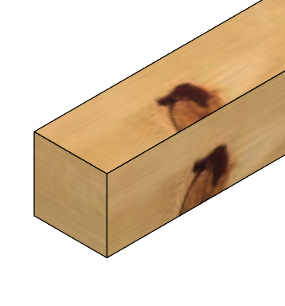
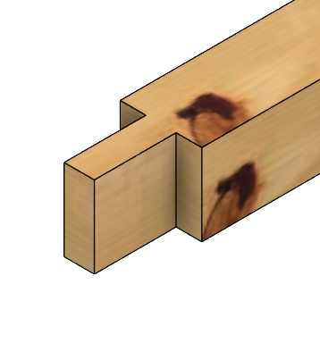
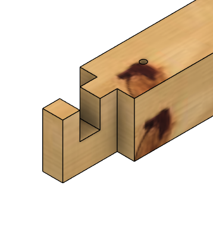
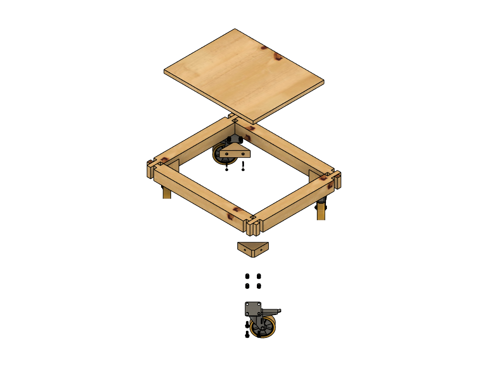
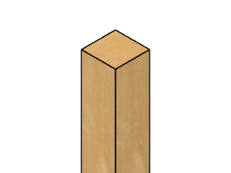
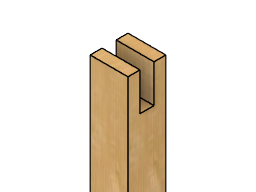
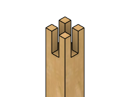
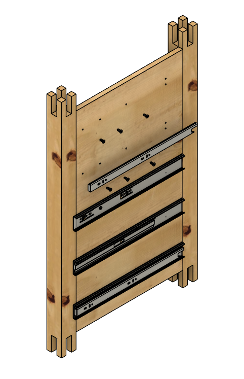
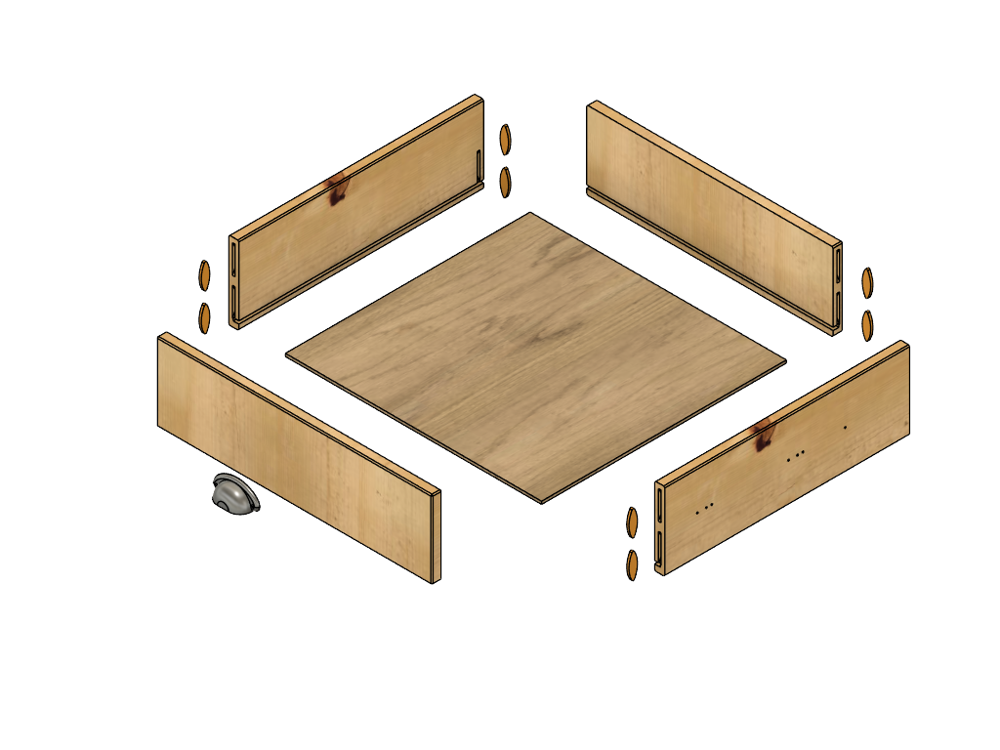

Die Idee
Grundmodul für eine Werkstattfamilie
Der Standardtisch war von Anfang an als Grundmodul gedacht, auf dem weitere Werkstattmöbel aufbauen können – ein Format, das sich für unterschiedliche Maschinen anpassen lässt. Konstruktion, Schubladen und Rollen sind auf Stabilität, Ordnung und Mobilität ausgelegt.
- Massive Fichte für Stabilität.
- Fünf leichtgängige Schubladen für Ordnung.
- Rollen für volle Flexibilität.
Der Tisch ist kompakt, mobil und handwerklich sauber gebaut. Die robuste Konstruktion sorgt für Stabilität im Werkstattalltag; die sichtbare Fichtenmaserung bleibt als Gestaltungselement erhalten. Damit eignet sich der Standardtisch als Ausgangspunkt für eine Serie von Maschinentischen – vom Standbohrmaschinentisch bis zur Bandsäge.
Das System basiert auf einem klaren Raster: Die fünf Schubladen des Standardtisches entsprechen einer Höheneinheit (HE). Zusätzlich gibt es 1,5 HE und 2 HE‑Schubladen, die in das gleiche Grundmaß passen. So entsteht ein Baukastensystem, das in zukünftigen Werkstattmodulen wiederverwendet wird.
Der Standardtisch ist damit der erste Baustein eines Systems, das auf einem einheitlichen Raster basiert.
Hinweis zum Baukastensystem: Das Höhenraster (1 HE, 1,5 HE, 2 HE) ist der Standard für zukünftige Werkstattmöbel; Schubladen und Module bleiben dadurch kompatibel.
 Die Baugruppen
Die Baugruppen
Die folgenden Baugruppen entsprechen in Aufbau und Fertigung dem Standardtisch.
Ein Klick auf eine Zeichnung öffnet die Vollansicht zum Blättern; ein Klick auf PDF öffnet die technische Zeichnung in Originalgröße.
Stückliste – Hauptbaugruppe Standardtisch
| Baugruppe | Anzahl | Beschreibung |
|---|---|---|
| Rahmen unten | 1 |
Unterer Grundrahmen mit Bodenplatte und Rollen Enthält: Querrahmen, Bodenplatte, Ecken, Rollen, M8-Verbinder |
| Rahmen oben | 1 |
Oberer Rahmen zur Aufnahme der Tischplatte Enthält: Querrahmen, Spax 6×70 |
| Seitenteile (links & rechts) | 1 Satz |
Zwei Seitenteile mit je zwei Beinen Enthält: 2 Seitenplatten 702×302×18 mm, 4 Beine 812×54×54 mm |
| Tischplatte & Rückwand | 1 Satz | Tischplatte MDF 600×600×22 mm und Rückwand 702×490×18 mm |
| Schubladen (5 Stück) | 1 Satz |
Fünf Schubladen mit Front, Seiten, Rückteil und Boden Enthält: 10 Schubladenschienen, 30 Stahlia-Schrauben |
Fertigung
Zuschnitt des Rahmenholzes und der Beine
Die Rahmenhölzer werden aus Kieferleisten 2000×54×54 mm zugeschnitten. Vor dem eigentlichen Zuschnitt wird ein Anschnitt von 6 mm entfernt, um eine saubere, rechtwinklige Stirnfläche zu erhalten. Für jeden weiteren Schnitt wird eine Schnittfuge von ca. 4 mm berücksichtigt. Der Zuschnitt erfolgt mit der Kapp-Zugsäge, um wiederholgenaue Längen sicherzustellen.
Hinweis: Zeichnung = Vollansicht, PDF = technische Zeichnung in Originalgröße.
Zuschnittplan für Rahmenhölzer und Beine aus 2000×54×54 mm Kiefer
| Stange | Zuschnitt | Rechnung | Rest |
|---|---|---|---|
| 1 |
1× Bein (812 mm) 1× Rahmen vorn (600 mm) 1× Rahmen Seite (500 mm) |
6 + 4 + 812 + 4 + 600 + 4 + 500 = 1930 | 70 mm |
| 2 |
1× Bein (812 mm) 1× Rahmen vorn (600 mm) 1× Rahmen Seite (500 mm) |
6 + 4 + 812 + 4 + 600 + 4 + 500 = 1930 | 70 mm |
| 3 |
1× Bein (812 mm) 1× Rahmen vorn (600 mm) 1× Rahmen Seite (500 mm) |
6 + 4 + 812 + 4 + 600 + 4 + 500 = 1930 | 70 mm |
| 4 |
1× Bein (812 mm) 1× Rahmen vorn (600 mm) 1× Rahmen Seite (500 mm) |
6 + 4 + 812 + 4 + 600 + 4 + 500 = 1930 | 70 mm |
Der Zuschnitt deckt alle benötigten Rahmen- und Beinbauteile ab. Der Verschnitt bleibt gleichmäßig gering.
Tipp: Alle Zuschnitte sollten mit Paarungszeichen markiert werden, um die Zuordnung während der Montage zu erleichtern.
Fertigung des oberen Rahmens
Ein Klick auf eine Zeichnung öffnet die Vollansicht zum Blättern; ein Klick auf PDF öffnet die technische Zeichnung in Originalgröße.
Stückliste – Rahmen oben
| Bauteil | Anzahl | Maße | Material | Beschreibung |
|---|---|---|---|---|
| Rahmen vorn oben | 2 | 600×54×54 mm | Kiefer |
Zuschnitt aus Rahmenholz 2000×54×54 mm BAUHAUS – Artikel 14612119 |
| Rahmen Seite oben | 2 | 500×54×54 mm | Kiefer |
Zuschnitt aus Rahmenholz 2000×54×54 mm BAUHAUS – Artikel 14612119 |
| Spax 6×70 | 12 | 6×70 mm | Stahl | B00MPIBYAU – Amazon PartnerNet |
Zapfenverbindungen an den Rahmenhölzern
Die Zapfenverbindungen sind für alle Rahmenhölzer identisch und werden vor der Montage vollständig hergestellt; die folgenden Schritte gelten für oberen und unteren Rahmen sowie Vorder‑ und Seitenrahmen.
Vor Beginn der Bearbeitung erfolgt eine eindeutige Zuordnung der Rahmenhölzer zu den jeweiligen Beinen. Da die tatsächlichen Querschnitte aufgrund von Fertigungstoleranzen leicht variieren können, werden alle Bauteile mit Paarungszeichen markiert. Dies stellt über alle Arbeitsschritte hinweg eine eindeutige Bezugskante und Ausrichtung sicher.



Schrittweise Fertigung der Zapfenverbindungen
- Rohmaterial: Kantholz der beiden Seiten 54 mm × 54 mm × 500 mm, Kantholz vorn/hinten 54 mm × 54 mm × 600 mm, Stirnflächen rechtwinklig.
- Anriss: Zapfenlänge 54 mm an beiden Stirnseiten anreißen; Zapfenbreite 20 mm seitlich markieren; Zapfenhöhe = volle Materialhöhe 54 mm.
- Absetzschnitt: Absetzschnitt am Zapfengrund mit Kapp‑Zugsäge, Schnitttiefe ca. 17 mm.
- Längsschnitte: Längsschnitte zur Freilegung des Zapfens mit Bandsäge (alternativ Handsäge).
- Grobform: Seitliches Material entfernen, Grobform Zapfen 20 mm × 54 mm herstellen.
- Feinbearbeitung: Zapfenbreite auf 20 mm ± 0,2 mm nacharbeiten; seitliche Schultern rechtwinklig ausarbeiten.
- Aussparung: Aussparung beginnt an der Zapfenschulter; Maße: 20 mm Länge × 17 mm Tiefe; volle Höhe 54 mm.
- Bohrbild anreißen: Drei Bohrpunkte auf Mittellinie (27 mm) markieren; Abstände zu Schultern und Enden gemäß Zeichnung.
- Bohrungen: Drei Durchgangsbohrungen Ø 6 mm; sichtseitige Senkung Ø 12 mm / 90°; Reihenfolge: erst bohren, dann senken; Bohrungen entgraten.
- Endbearbeitung: Kanten leicht brechen, Oberfläche reinigen; abschließende Maßkontrolle durchführen.
Die Zapfen werden auf Basis der realen Holzbreite (Ist-Maß) angerissen. Anstatt pauschal von 54 mm auszugehen, wird jedes Rahmenholz individuell nach Zeichnung angezeichnet, um Maßabweichungen auszugleichen.
Zunächst wird mit der Kapp-Zugsäge der Absetzschnitt am Zapfengrund ausgeführt. Die Schnitttiefe beträgt ca. 17 mm. Anschließend werden die Längsschnitte zur Freilegung der Zapfen mit der Bandsäge vorgenommen. Alternativ kann hierfür eine Handsäge (z. B. japanische Zugsäge) verwendet werden.
Nach dem groben Zuschnitt werden die Zapfen auf das endgültige Sollmaß von 20 mm Dicke gebracht. Dies erfolgt vorzugsweise mit einer Kantenfräse oder Oberfräse, um ein gleichmäßiges Ergebnis zu erzielen.
Zapfenverbindungen an den Rahmenhölzern
| Bauteil | Anzahl | Rohmaß | Bearbeitung |
|---|---|---|---|
| Rahmenholz vorn | 2 | 600×54×54 mm |
Zapfen nach Ist-Maß angerissen, Absetzschnitt 17 mm tief mit Kapp-Zugsäge, Längsschnitte mit Bandsäge, Zapfen auf 20 mm Sollmaß gefräst, Nasenverzapfung gemäß Zeichnung, Durchgangs- und Sacklochbohrungen für Verbundmuffen |
| Rahmenholz Seite | 2 | 500×54×54 mm |
Zapfen nach Ist-Maß angerissen, Absetzschnitt 17 mm tief mit Kapp-Zugsäge, Längsschnitte mit Bandsäge, Zapfen auf 20 mm Sollmaß gefräst, Nasenverzapfung gemäß Zeichnung, Durchgangs- und Sacklochbohrungen für Verbundmuffen |
Alternativ können die Zapfen mit einem scharfen Stechbeitel auf Maß ausgearbeitet werden. Dies bietet sich an, wenn keine Fräse verfügbar ist oder bewusst von Hand gearbeitet werden soll.
Anschließend werden die Nasen-Verzapfungen gemäß Zeichnung ausgearbeitet. Die Nasen werden mit der Bandsäge grob vorgeschnitten und danach mit dem Stechbeitel präzise nachgearbeitet, bis die Konturen passgenau ausgeführt sind.
Für die Nacharbeit der Nasen kann ebenfalls die Kantenfräse eingesetzt werden. Dabei ist besonders auf die Laufrichtung zu achten, um Ausrisse zu vermeiden und die Stabilität des Zapfens nicht zu beeinträchtigen.
Nach Abschluss der Zapfen- und Nasenbearbeitung werden die Durchgangsbohrungen sowie die Sacklochbohrungen für die Verbundmuffen an der Tischbohrmaschine gesetzt. Die Sacklochbohrungen entsprechen in Ausführung und Tiefe den Bohrungen der unteren Eckverbindungen.
Fertigung des unteren Rahmens
Ein Klick auf eine Zeichnung öffnet die Vollansicht zum Blättern; ein Klick auf PDF öffnet die technische Zeichnung in Originalgröße.
Stückliste – Rahmen unten
| Bauteil | Anzahl | Maße | Material | Beschreibung |
|---|---|---|---|---|
| Rahmen vorn unten | 2 | 600×54×54 mm | Kiefer |
Zuschnitt aus Rahmenholz 2000×54×54 mm BAUHAUS – Artikel 14612119 |
| Rahmen Seite unten | 2 | 500×54×54 mm | Kiefer |
Zuschnitt aus Rahmenholz 2000×54×54 mm BAUHAUS – Artikel 14612119 |
| Bodenplatte | 1 | 490×390×18 mm | Kiefer |
Zuschnitt aus Leimholzplatte Naturwuchs 800×400×18 mm BAUHAUS – Artikel 23141021 |
| Ecke unten | 4 | 120×54×34 mm | Fichte / Tanne |
Zuschnitt aus Rahmenholz 2000×54×34 mm BAUHAUS – Artikel 14612092 |
| Schwerlastrolle 100 | 4 | Ø 100 mm | Stahl / Gummi | B0BVBXW8K6 – Amazon PartnerNet |
| Verbundmuffe M8×15 | 16 | M8×15 mm | Edelstahl AISI 202 | B0FCMZSSWY – Amazon PartnerNet |
| Unterlegscheibe DIN 125 8.4 | 16 | Ø 8.4 mm | Edelstahl AISI 202 | B07SH8K2M4 – Amazon PartnerNet |
| Zylinderschraube DIN 633 M8×20 | 16 | M8×20 mm | Edelstahl AISI 202 | Im Lieferumfang der Schwerlastrollen enthalten |
| Spax 5×60 | 16 | 5×60 mm | Stahl | B00HYXX6IY – Amazon PartnerNet |
Zapfenverbindungen an den Rahmenhölzern
Die Zapfenverbindungen des unteren Rahmens entsprechen dem Abschnitt „Zapfenverbindungen an den Rahmenhölzern“ (oberer Rahmen); Zeichnung und Maße sind identisch.
Fertigung der Ecken unten
Verwendet wird eine Rahmenholz‑Stange aus Fichte/Tanne 2000×54×34 mm (BAUHAUS – Artikel 14612092).
Aus der Stange werden vier Eckklötze mit dem Rohmaß 54×34×120 mm gefertigt. Der Zuschnitt erfolgt mit der Kapp-Zugsäge und beginnt mit einem 45°-Gehrungsschnitt.
Achtung: Bei Gehrungsschnitten müssen die 45°-Anschläge der Kapp-Zugsäge korrekt justiert sein oder das Werkstück konsequent mit derselben Bezugsfläche gedreht werden. Nur so bleiben alle Schnitte winkelgenau und reproduzierbar.
Anschließend werden alle Bohrungen gemäß Zeichnung an der Standbohrmaschine eingebracht. Jede Ecke erhält zwei Durchgangsbohrungen Ø 6 mm mit Kegelsenkung für die spätere Verschraubung mit dem Rahmen sowie zwei Sacklochbohrungen Ø 12 mm mit einer Tiefe von 20 mm und einer Kegelsenkung Ø 14 mm.
Die Sacklochbohrungen dienen der Aufnahme der Verbundmuffen. Das Einschrauben der Verbundmuffen erfolgt erst zu einem späteren Zeitpunkt, nachdem die Ecken im Rahmen montiert sind.
Fertigung der Ecken unten
| Bauteil | Anzahl | Rohmaß | Bearbeitung |
|---|---|---|---|
| Ecke unten | 4 | 54×34×120 mm |
45°-Gehrung beidseitig, 2× Ø 6 mm Durchgangsbohrung mit Senkung, 2× Ø 12 mm Sacklochbohrung (20 mm) mit Ø 14 mm Senkung |
Nach der Fertigung stehen die Ecken unten vollständig vorbereitet für die Montage des unteren Rahmens zur Verfügung.
 Fertigung und Montage der Bodenplatte
Fertigung und Montage der Bodenplatte
Die Bodenplatte besteht aus einer Leimholzplatte aus Kiefer mit den Maßen 490 mm × 390 mm × 18 mm. Da Holz ein Naturprodukt ist und der fertige Rahmen geringfügige Maßabweichungen aufweisen kann, wird der Rahmen zunächst ausgemessen und die Bodenplatte anschließend direkt auf dieses Endmaß zugeschnitten. Die Kanten werden leicht gebrochen, um Ausrisse zu vermeiden und eine saubere Passung im unteren Rahmen sicherzustellen.
Die Bohrungen für die Befestigung der Bodenplatte werden gemäß Zeichnung ausgeführt. Die Bohrbilder sind symmetrisch angeordnet und dienen der Verschraubung mit den Ecken unten.
Fertigung der Bodenplatte
| Bauteil | Anzahl | Rohmaß | Bearbeitung |
|---|---|---|---|
| Bodenplatte | 1 | 490×390×18 mm |
Zuschnitt auf Endmaß nach Ausmessen des Rahmens, Kanten leicht brechen, Senkbohrungen gemäß Zeichnung für Verschraubung mit den Ecken unten |
Montage der Ecken unten
Die vier Ecken unten werden gemäß Zeichnung gefertigt und auf der Werkbank ausgerichtet. Jede Ecke besitzt eine Durchgangsbohrung für die spätere Verschraubung mit der Bodenplatte sowie die Sacklöcher für die Verbundmuffen. Die Ecken werden paarweise spiegelbildlich ausgeführt.
Anschließend werden die Verbundmuffen in die Sacklöcher eingeschraubt. Die Muffen müssen vollständig und plan im Holz sitzen, damit die späteren Schraubverbindungen der Schwerlastrollen sauber greifen.
Montage der Schwerlastrollen

Nach dem Einschrauben der Verbundmuffen werden die vier Schwerlastrollen an den Ecken unten montiert. Die Rollen werden so ausgerichtet, dass die Befestigungsplatten bündig aufliegen und die Bohrungen mit den Verbundmuffen fluchten. Jede Rolle wird mit vier Schrauben M8 × 20 und passenden Unterlegscheiben befestigt.
Die Schrauben werden gleichmäßig angezogen, damit die Rollen plan aufliegen und die Konstruktion später stabil und leichtgängig bewegt werden kann.
 Montage der Bodenplatte
Montage der Bodenplatte
Die Bodenplatte wird auf die ausgerichteten Ecken unten aufgesetzt. Die Senkbohrungen der Bodenplatte fluchten mit den Durchgangsbohrungen der Ecken. Anschließend wird die Platte mit den vorgesehenen Holzschrauben befestigt. Die Schrauben werden gleichmäßig angezogen, damit die Platte plan auf allen vier Ecken aufliegt.
Nach der Montage wird die Rechtwinkligkeit über Diagonalmaß kontrolliert. Die Bodenplatte muss spannungsfrei aufliegen und die Ecken müssen bündig mit den Kanten der Platte abschließen.
Seitenteile – Standardtisch
Ein Klick auf eine Zeichnung öffnet die Vollansicht zum Blättern; ein Klick auf PDF öffnet die technische Zeichnung in Originalgröße.
Stückliste – Seitenteile (links & rechts)
| Bauteil | Anzahl | Maße | Material | Beschreibung |
|---|---|---|---|---|
| Seitenplatte links & rechts | 2 | 702×302×18 mm | Kiefer |
Zuschnitt aus Leimholzplatte 800×400×18 mm BAUHAUS – Artikel 23141021 |
| Bein | 4 | 812×54×54 mm | Kiefer |
Zuschnitt aus Rahmenholz 2000×54×54 mm BAUHAUS – Artikel 14612119 |
| Schubladenschiene TSS4613SC-400 | 10 | 400 mm | Stahl | B09J18JV1P – Amazon PartnerNet |
| Schrauben Stahlia | 30 | – | Stahl | B0C7ZJ6NY1 – Amazon PartnerNet |
Zapfenverbindungen an den Beinen
Die Zapfenverbindungen an den Beinen sind für alle vier Beine identisch ausgeführt und werden vollständig vor der Montage hergestellt. Die Zapfen verbinden die Beine mit den Rahmenhölzern des oberen und unteren Rahmens.
Zapfenverbindungen an den Beinen
| Bauteil | Anzahl | Rohmaß | Bearbeitung |
|---|---|---|---|
| Bein | 4 | 812×54×54 mm |
Zapfen nach Ist-Maß angerissen, Absetzschnitte und Längsschnitte vollständig mit der Bandsäge, Zapfen auf Sollmaß gefräst oder mit Stechbeitel ausgearbeitet, Durchgangs- und Sacklochbohrungen für Verbundmuffen gemäß Zeichnung |



Schrittweise Fertigung der Zapfenverbindungen
- Rohmaterial: Beinrohling 812 mm × 54 mm × 54 mm.
- Anriss: Zapfenlänge 54 mm anreißen; Zapfenbreite 20 mm markieren; Zapfenhöhe = volle Beinhöhe 54 mm.
- Absetzschnitt: Absetzschnitt am Zapfengrund mit Kapp‑Zugsäge; Schnitttiefe ca. 17 mm (gemäß Zeichnung).
- Längsschnitte: Längsschnitte zur Freilegung des Zapfens mit Bandsäge oder Handsäge.
- Grobform: Seitliches Material entfernen, Grobform des Zapfens herstellen (Zapfenquerschnitt 20 mm × 54 mm).
- Feinbearbeitung: Zapfenbreite auf 20 mm ± 0,2 mm nacharbeiten; seitliche Schultern rechtwinklig ausarbeiten.
- Aussparung / Nasen: Falls vorgesehen, Nasenverzapfung gemäß Zeichnung ausarbeiten; Stufenflächen plan herstellen. Beachte den in der Zeichnung markierten 20 mm Abstand im Gelenkbereich.
- Passprobe: Zapfen trocken in die Gegenverbindung einsetzen; Sitz, Fuge und Fluchten prüfen; ggf. punktuell nacharbeiten.
- Endbearbeitung: Kanten leicht brechen, Oberfläche reinigen; abschließende Maßkontrolle durchführen.
Die Zapfen werden entsprechend der tatsächlichen Holzbreite (Ist-Maß) angerissen. Jedes Bein wird einzeln nach Zeichnung angezeichnet, um Maßabweichungen auszugleichen.
Die Absetzschnitte und Längsschnitte zur Freilegung der Zapfen werden vollständig mit der Bandsäge ausgeführt. Alternativ können die Schnitte auch mit einer Handsäge (z. B. japanische Zugsäge) hergestellt werden, sofern keine Bandsäge zur Verfügung steht.
Nach dem groben Zuschnitt werden die Zapfen auf das endgültige Sollmaß gebracht. Dies erfolgt vorzugsweise mit der Kantenfräse oder Oberfräse, um ein gleichmäßiges Ergebnis zu erzielen.
Alternativ können die Zapfen mit einem scharfen Stechbeitel auf Maß ausgearbeitet werden. Dies bietet sich an, wenn keine Fräse verfügbar ist oder bewusst von Hand gearbeitet werden soll.
Abschließend werden die Durchgangsbohrungen sowie die Sacklochbohrungen für die Verbundmuffen gemäß Zeichnung an der Tischbohrmaschine gesetzt. Die Ausführung entspricht den Bohrungen der Rahmenhölzer und der unteren Eckverbindungen.
Fertigung und Montage der Seitenplatten
Die Seitenplatten bestehen aus zwei Leimholzplatten aus Kiefer, die mit der Tauchkreissäge auf das Endmaß von 702 mm × 302 mm × 18 mm zugeschnitten werden. Die Maße entsprechen den Angaben der technischen Zeichnungen für die linke und rechte Seitenplatte. Sicherheitshalber wird vor dem Zuschnitt das Ist-Maß der Platten noch einmal nachgemessen.
Nach dem Zuschnitt werden die Bohrungen gemäß Zeichnung eingebracht. Die linke und rechte Seitenplatte unterscheiden sich lediglich in der Position der Bohrbilder, daher werden beide Platten einzeln angerissen und gebohrt.
Fertigung und Montage der Seitenplatten
| Bauteil | Anzahl | Rohmaß | Bearbeitung |
|---|---|---|---|
| Seitenplatte links | 1 | 702×280×18 mm |
25× Ø 4 mm Bohrungen (12 mm tief) gemäß Zeichnung, Bohrbild für Auszüge nach Maßangaben, Kanten brechen |
| Seitenplatte rechts | 1 | 702×280×18 mm |
25× Ø 4 mm Bohrungen (12 mm tief) gemäß Zeichnung, spiegelbildliches Bohrbild zur linken Seite, Kanten brechen |
Die Seitenplatten werden nicht über sichtbare Durchgangsbohrungen befestigt, sondern mit Pocket-Holes montiert. Die Pocket-Holes sind in den technischen Zeichnungen nicht vermerkt und werden zusätzlich ausgeführt. Pro Seitenplatte werden drei Pocket-Holes an der Vorderseite, drei an der Rückseite sowie je zwei an der oberen und unteren Kante gesetzt. Die Taschenbohrungen werden mit einer Pocket-Hole-Schablone hergestellt und so ausgerichtet, dass die Verschraubung später verdeckt auf der Innenseite des Korpus erfolgt.
Montage der Auszüge

Vor der Montage werden alle fünf Paar Vollauszüge geprüft und nach linker und rechter Seite sortiert. Die Korpusschienen werden auf der Innenseite der Seitenplatten montiert. Die Positionen ergeben sich aus der Höhe der Schubladen und sind gleichmäßig verteilt. Jede Schiene wird waagerecht ausgerichtet und mit drei Schrauben befestigt.
Die Schubladenschienen werden mittig an den Schubladenseiten montiert. Auch hier werden je drei Schrauben verwendet. Nach der Montage werden die Schubladen probeweise eingesetzt, um Leichtgängigkeit und Parallelität zu prüfen.
Montage der Seitenplatten
Die Seitenplatten werden nach der vollständigen Montage und Verleimung des Korpus montiert. Die Platten werden bündig mit den Außenkanten der Beine ausgerichtet und über die zuvor gesetzten Pocket-Holes verschraubt.
Die Verschraubung erfolgt mit geeigneten Holzschrauben. Die Schrauben werden gleichmäßig verteilt angezogen, um ein Verziehen der Platten zu vermeiden.
Nach der Montage wird die Fluchtung der Seitenplatten kontrolliert. Beide Platten müssen parallel zueinander stehen und plan am Korpus anliegen.
Montage des Korpus
Nachdem alle Zapfenverbindungen an Rahmenhölzern und Beinen vollständig gefertigt sind, kann der Korpus aus Rahmen oben, Rahmen unten und den vier Beinen zusammengefügt werden.
Zunächst werden die Beine mit den Zapfen des unteren Rahmens verbunden. Die Paarungszeichen dienen dabei als Orientierung, um die zuvor festgelegte Bezugskante und Ausrichtung beizubehalten. Die Zapfen werden ohne Kraftaufwand vollständig in die entsprechenden Zapfenlöcher eingepasst.
Nachdem alle vier Beine am unteren Rahmen ausgerichtet sind, wird der obere Rahmen aufgesetzt. Auch hier erfolgt die Ausrichtung über die Zapfen der Beine, bis alle Schultern gleichmäßig anliegen und die Rahmen parallel zueinander stehen.
Vor dem Verleimen wird eine vollständige Trockenprobe durchgeführt. Dabei werden Passgenauigkeit, Rechtwinkligkeit und die Fluchtung der Rahmen kontrolliert. Eventuelle Abweichungen werden in diesem Schritt korrigiert.
Anschließend werden alle Zapfenverbindungen verleimt. Der Korpus wird mit geeigneten Zwingen gleichmäßig verpresst. Die Zwingen werden so gesetzt, dass die Schultern der Zapfen sauber anliegen und der Rahmen in allen Ebenen rechtwinklig bleibt.
Während der Presszeit wird die Konstruktion erneut auf Verwindungsfreiheit und parallele Ausrichtung geprüft. Geringfügige Korrekturen können vorgenommen werden, solange der Leim noch nicht angezogen hat.
Achtung: Die Verleimung muss vollständig aushärten, bevor weitere Bauteile montiert werden. Mindestens 24 Stunden Trockenzeit einplanen.
Tischplatte & Rückwand – Standardtisch
Ein Klick auf eine Zeichnung öffnet die Vollansicht zum Blättern; ein Klick auf PDF öffnet die technische Zeichnung in Originalgröße.
Stückliste – Tischplatte & Rückwand
| Bauteil | Anzahl | Maße | Material | Beschreibung |
|---|---|---|---|---|
| Tischplatte | 1 | 600×600×22 mm | MDF |
MDF-Platte E1 – 22 mm Hornbach (Zuschnitt) |
| Rückwand | 1 | 702×490×18 mm | Fichte/Tanne |
Zuschnitt aus Leimholzplatte Naturwuchs 800×500×18 mm BAUHAUS – Artikel 25859579 |
Fertigung und Montage der Tischplatte
Die Tischplatte besteht aus einer MDF-Platte mit den Maßen 600 mm × 600 mm × 22 mm. Die Platte wird als fertiger Zuschnitt verwendet und benötigt keine weiteren Bearbeitungsschritte. Vor der Montage wird das Ist-Maß der Platte kontrolliert. Anschließend werden die Kanten mit der Kantenfräse leicht gebrochen und die Oberfläche mit einem 2K-Hartlack für Theken und Tischplatten lackiert.
Fertigung und Montage der Tischplatte
| Bauteil | Anzahl | Rohmaß | Bearbeitung |
|---|---|---|---|
| Tischplatte | 1 | 600×600×22 mm |
Fertigzuschnitt aus MDF, Kanten mit der Kantenfräse leicht brechen, Oberfläche mit 2K-Hartlack lackieren, Montage von unten mit Ø 4×40 mm Holzschrauben |
Montage der Tischplatte
Die Tischplatte wird nach der vollständigen Montage des Korpus aufgesetzt. Sie wird bündig zu allen Außenkanten ausgerichtet und gleichmäßig auf dem oberen Rahmen positioniert. Die Befestigung erfolgt von unten durch den oberen Rahmen hindurch, sodass von außen keine Schrauben sichtbar sind.
Die Verschraubung erfolgt mit Holzschrauben Ø 4 mm × 40 mm. Die Schrauben werden gleichmäßig verteilt gesetzt, um ein Verziehen der MDF-Platte zu vermeiden. Nach der Montage wird geprüft, ob die Platte plan aufliegt und der Überstand an allen Seiten gleichmäßig ist.
Fertigung und Montage der Schublade
Ein Klick auf eine Zeichnung öffnet die Vollansicht zum Blättern; ein Klick auf PDF öffnet die technische Zeichnung in Originalgröße.
Stückliste – Schubladen (Front, Seiten, Rückteil, Boden)
| Bauteil | Anzahl | Maße | Material | Beschreibung |
|---|---|---|---|---|
| Schubladenfront | 5 | 392×110×18 mm | Kiefer |
Zuschnitt aus Leimholzplatte 800×400×18 mm BAUHAUS – Artikel 23141021 |
| Schubladenseite | 10 | 392×110×18 mm | Kiefer |
Zuschnitt aus Leimholzplatte 800×400×18 mm BAUHAUS – Artikel 23141021 |
| Schubladenrückteil | 5 | 392×110×18 mm | Kiefer |
Zuschnitt aus Leimholzplatte 800×400×18 mm BAUHAUS – Artikel 23141021 |
| Schubladenboden | 5 | 392×350×6 mm | MDF |
MDF-Platte 6 mm – Zuschnitt Hornbach (Zuschnitt) |
| Schubladenschiene TSS4613SC-400 | 10 | 400 mm | Stahl | B09J18JV1P – Amazon PartnerNet |
| Schrauben Stahlia | 30 | – | Stahl | B0C7ZJ6NY1 – Amazon PartnerNet |
 Fertigung der Schublade
Fertigung der Schublade
Die Schublade wird aus fünf zugeschnittenen Leimholzplatten aufgebaut. Front, Rückteil und die beiden Seitenteile erhalten die in den Zeichnungen angegebenen Lamello-Fräsungen. Die Positionen sind so gewählt, dass die Zarge beim Verleimen sauber geführt wird und sich ohne Verzug ausrichten lässt. Die Seitenteile besitzen zusätzlich eine Nut für den Boden sowie mehrere Bohrungen, über die der Boden später fixiert wird. Vor dem Zusammenbau werden alle Kanten kontrolliert und gegebenenfalls leicht nachgearbeitet, damit die Bauteile ohne Spannung zusammengefügt werden können. Die Bodenplatte wird auf das Endmaß gebracht und die Kanten werden gebrochen, damit sie sich gleichmäßig in die Nut einschieben lässt.
Fertigung und Montage der Schublade
| Bauteil | Anzahl | Rohmaß | Bearbeitung |
|---|---|---|---|
| Front | 1 | 486×200×18 mm |
Lamello-Fräsungen gemäß Zeichnung, Kanten kontrollieren und leicht brechen |
| Rückteil | 1 | 454×200×18 mm |
Lamello-Fräsungen gemäß Zeichnung, Kanten kontrollieren und leicht brechen |
| Seite links | 1 | 482×200×18 mm |
Lamello-Fräsungen gemäß Zeichnung, umlaufende Nut für Boden, Bohrungen für Bodenfixierung, Kanten nacharbeiten |
| Seite rechts | 1 | 482×200×18 mm |
Lamello-Fräsungen gemäß Zeichnung, umlaufende Nut für Boden, Bohrungen für Bodenfixierung, Kanten nacharbeiten |
| Bodenplatte | 1 | 435×500×4 mm |
Zuschnitt auf Endmaß, Kanten brechen, Einschieben in die Nut, Verschraubung am Rückteil |
 Montage der Schublade
Montage der Schublade

Für die Montage werden zunächst Front und Seitenteile miteinander verleimt. Die Lamellos sorgen dafür, dass die Bauteile beim Ansetzen der Zwingen in ihrer Position bleiben. Sobald die Verbindung geschlossen ist, wird das Rückteil eingesetzt und ebenfalls verleimt. Während der Presszeit werden die Diagonalen gemessen, um die Rechtwinkligkeit sicherzustellen. Nach dem Aushärten wird die Bodenplatte in die umlaufende Nut eingeschoben und am hinteren Ende über die vorgesehenen Bohrungen verschraubt. Abschließend wird der Griff auf der Front montiert. Die Schublade kann danach in die Auszüge eingesetzt und auf gleichmäßigen Lauf geprüft werden.
Zwischenfazit Fertigung: Korpus, Seiten, Boden, Tischplatte und Schublade sind gefertigt und montiert. Im nächsten Abschnitt findest du die zusammengefassten Werkzeuge und Ausrüstung für den gesamten Ablauf.
Werkzeuge und Ausrüstung
Sägen
- Kapp-Zugsäge (für wiederholgenaue Längen und Anschnitte).
- Bandsäge (für Längsschnitte an Zapfen und grobe Nasenvorschnitte).
- Handsäge (z. B. japanische Zugsäge) als Alternative zur Bandsäge.
Fräsen und Formgebung
- Kantenfräse / Oberfräse (zum Aufmaßbringen der Zapfen, Kanten brechen, Lamello-Fräsungen).
- Lamello-Fräse / Lamello-Werkzeug (für Lamello-Verbindungen in den Schubladen).
Bohren und Bohrhilfen
- Standbohrmaschine / Tischbohrmaschine (Durchgangs- und Sacklochbohrungen, Bohrbilder).
- Akkubohrschrauber (Vorbohren, Verschrauben und Montagearbeiten).
- Kegelsenker (zum sauberen Versenken von Schraubenköpfen in Sichtflächen).
- Pocket-Hole-Schablone (für die Taschenbohrungen an den Seitenplatten).
Spannhilfen
- Zwingen (gleichmäßiges Verpressen des verleimten Korpus und der Schubladen).
 Oberfläche und Finish
Oberfläche und Finish
- Orbitalschleifer (für Schleifarbeiten an Oberflächen).
Mess- und Markierwerkzeuge
- Anreißwerkzeuge, Paarungszeichen, Messschieber / Metermaß (für Ist-Maß-Anrisse und Kontrolle der Endmaße).
- Winkelschablone / Schreinerwinkel (zum Prüfen von Rechtwinkligkeit und reproduzierbaren Winkeln).
 Fazit
Fazit
Der Standardtisch zeigt, wie sich ein einfaches Grundmodul zu einem stabilen und vielseitigen Möbel entwickeln lässt. Die Konstruktion bleibt bewusst klar gehalten: wenige Bauteile, wiederkehrende Verbindungen und ein Aufbau, der sich in der Werkstatt zuverlässig umsetzen lässt. Die Kombination aus Rahmen, Korpus und Tischplatte ergibt ein solides Ganzes, das sich bei Bedarf erweitern oder anpassen lässt.
Mit diesem Tisch steht ein funktionales Basiselement bereit, das sowohl im Alltag als auch in der Werkstatt seinen Platz findet. Die Konstruktion ist nachvollziehbar, die Montage bleibt überschaubar, und das Ergebnis wirkt aufgeräumt und langlebig.